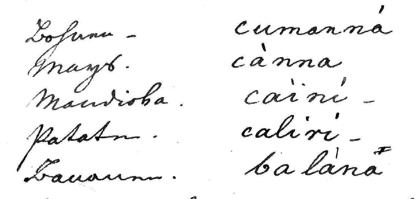
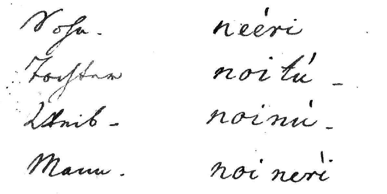

Primeiros Registros das Línguas Baniwa e Koripako
Johann Natterer e os primeiros registros das línguas do Içana
Até onde indicam as fontes conhecidas, as listas elaboradas por Johann Natterer em 1831 constituem a documentação linguística mais antiga das variedades hoje denominadas Baniwa e Koripako. O naturalista austríaco chegou ao Brasil em 1817 e, durante aproximadamente dezoito anos, percorreu o interior do país reunindo animais, plantas, objetos etnográficos e amostras de línguas indígenas. Em sua oitava viagem, partiu de Borba, passou por Manaus e subiu o rio Negro até a fronteira venezuelana, visitando também afluentes do Alto Rio Negro antes de regressar a Barcelos, em agosto de 1831 (Kann, 1989, pp. 101–103; Adelaar; Brijnen, 2014, pp. 333–335).
A lista do Içana foi registrada em Nossa Senhora da Guia, na foz do rio, em 30 de junho de 1831. No cabeçalho, Natterer a definiu como “língua dos Bannivas que vivem no rio Içana”, acrescentando que se tratava “mais propriamente” do dialeto dos Bòvautana. O informante foi Fernando, morador de Nossa Senhora da Guia proveniente do rio Schauialí ou Jauialé, provavelmente Yawiali/Dzawiali, nas proximidades das cabeceiras do Içana e do lado do Uaupés. A coleta ocorreu, portanto, no Baixo Içana, mas documentou a fala de uma pessoa originária de uma região situada rio acima (Natterer, 1831, lista 23; Kann, 1989, pp. 116–118).
O registro integra um acervo de listas de palavras de 72 línguas indígenas. A coleção é especialmente rica em línguas Aruák do rio Negro, incluindo Banniva, Baré, Tariana, Warekena, Manao, Passé e Jumana. Para várias línguas amazônicas, essas listas representam o primeiro ou mesmo o único testemunho conhecido. Natterer registrou palavras tal como foram fornecidas pelos falantes, frequentemente acompanhadas de marcas gramaticais, e não apenas raízes isoladas. Sua grafia, contudo, antecede os sistemas modernos de transcrição fonética e emprega letras e diacríticos de maneira variável. A interpretação dos sons e das formas gramaticais exige, por isso, comparação com variedades Baniwa e Koripako documentadas posteriormente (Kann, 1989, pp. 102–107; Adelaar; Brijnen, 2014, pp. 334–336, 339–340).
Além da lista identificada como o dialeto Bòvautana, o manuscrito contém uma segunda lista lexical associada aos Commada. Natterer localiza os Commada Ypeca Tapuia no rio Jauialé (Yawiali) e os descreve como um ramo dos Baniva falante da língua Baniva. O vocabulário Commada ocupa as páginas seguintes e reúne nomes de animais, plantas, objetos, partes do corpo, termos de parentesco, numerais, verbos e pequenas expressões. A possível relação histórica entre a denominação Commada e os atuais Komadaminanai pode ser investigada mediante a comparação lexical e fonológica com as variedades Baniwa e Koripako contemporâneas.
Amostras das listas manuscritas

Fonte: Natterer (1831).
| Forma registrada | Glosa de Natterer | Tradução em português |
|---|---|---|
| cumanna | Lofum [?] | feijão |
| cánna | Mayz | milho |
| caini | Mandioka | mandioca |
| caliri | pataten [?] | batata-doce |
| balana | Banana | banana |

Fonte: Natterer (1831).
| Forma registrada | Glosa de Natterer | Tradução em português |
|---|---|---|
| neeri | Sohn | filho |
| noitú | Tochter | filha |
| noinu | Weib | mulher (esposa) |